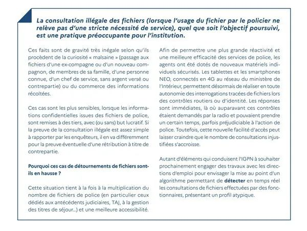

在法国马赛,有一位53岁的警察叔叔,名叫Thierry Z.,平时看起来人模人样,谁曾想,他居然在暗地里干着见不得人的勾当!上演现实版的”无间道”!
这位Thierry叔叔平时的工作是在马赛北区警局协助法警执行驱逐令，他还偷偷利用职务之便,频繁查阅警方内部档案,然后把这些机密信息卖给了毒贩·······
Thierry叔叔的”生意”做得不小。从2022年9月到2023年2月短短几个月内,他就查询了100多个人的犯罪记录和通缉令信息,400多辆车的登记信息,还有100多辆被通缉的车辆信息。这些信息可都是警方的机密,他居然就这么明目张胆地卖了出去!

而且,Thierry叔叔的”客户”可都不是善茬。去年8月30日,图卢兹的一位调查法官气得火冒三丈,向检察官同事控诉说:”这个腐败警察的行为特别有害,他阻碍甚至彻底毁掉了同事、检察官和调查法官的所有工作。”
原来,有个图卢兹的大毒贩就因为Thierry叔叔提供的信息,成功躲过了警方的追捕。这位毒贩涉嫌在比利牛斯东部省的布鲁收费站强行闯关,车里竟然装着488公斤的大麻树脂!警方在搜查时,还在他的手机里发现了几张显示警方档案的电脑屏幕照片。
这些照片,十有八九就是从Thierry叔叔那里买来的。
不仅如此,还有两个尼姆市的贩毒兄弟,在警方发出通缉令的前三天就知道自己被盯上了。他们立即”放弃了当前的作案方式,开始清理各个藏匿点”。这下可好,警方原本想悄悄收集情报推进调查,结果因为Thierry叔叔的泄密,整个调查都被搞砸了。
Thierry叔叔的”生意经”也很有意思。他每次查询完信息后,就用手机拍下电脑屏幕,然后通过加密软件发给买家。收到确认后,他还会小心翼翼地删除所有相关信息。
不过,好景不长,Thierry叔叔终于在去年7月4日凌晨被逮个正着。他面临多项指控,包括被动贿赂、泄露调查信息、滥用档案信息、参与犯罪团伙等等。
从警察变成了阶下囚,被关了6个月，现在他虽然出狱了,但还在司法监控之下,警察的工作自然是不能干了。
Thierry叔叔居然辩称自己只赚了4000到5000欧元。但是警方发现,他的中间人Malik B.通过PayPal收到了近23000欧元!都被抓了还如此不老实。
这个Malik B.在Snapchat上公开宣传,说自己能让人”安心旅行”。每天他都在朋友圈吹嘘自己能提供警方档案信息。这位仁兄表面上是个无业游民,实际上是个非法游艇出租商。
他在审讯中承认,一开始只是让Thierry叔叔帮忙查查亲朋好友的信息,后来才开始用香烟、香水、手表甚至现金来换取信息。
Thierry叔叔的”黑历史”可不止这些。警方调查发现,他从2016年就开始滥用职权,帮人消除交通罚单,取消车辆扣押。他还在下班后私下接活,给法警当证人赚外快。
其实,像Thierry叔叔这样的”害群之马”在法国警界并不少见。2022年,法国警察内部监察部门就调查了56起警察贪污案件。警方内部监察报告还特别提到,由于信息系统的普及,警察查询档案越来越方便,这也增加了信息泄露的风险。他们甚至考虑开发一个实时检测算法,来发现那些异常查询行为。
法国参议院最近也对这个问题进行了调查。他们认为,”腐败的增长是委员会在工作中发现的最令人担忧的现象之一,就像是一种毒药。”
即使是执法者,也可能成为法律的破坏者。期待法国司法系统能够公正严明地审理这个案件,给所有人一个交代。据悉Thierry Z.可能面临长达10年的监禁,不过在审判结果出来之前,他依然被推定为无罪。